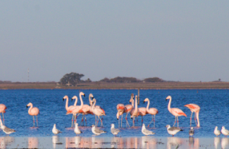
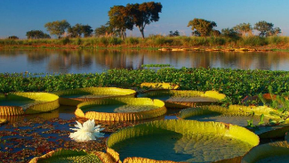
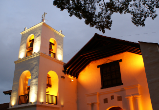
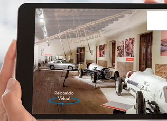
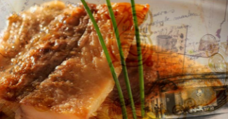
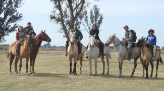

La laguna de los Flamencos

Aquí, en la laguna Melincué, donde los Flamencos australes encontraron un refugio para sus nidos y su reposo, en convivencia pacifica con otras aves y el entorno, para hacer un espectacular digno de conocer y admirar por el hombre. Un sitio Ramsar, reserva natural que permite realizar actividades acuáticas, zafaris fotográficos y que recuperó el brillo de su historia de oro -cuando fue una de los balnearios más exclusivos del país- para ofrecer hoy un centro de entretenimiento sofisticado y para todos los gustos.
Jaaukanigás, el refugio secreto del Paraná

Los Abipones, el pueblo indígena originario de la región, solían llamarse «Jaaukanigás», que significa «gente del agua». Este sitio Ramsar, de importancia internacional es una invitación a descubrir la naturaleza de un territorio virgen, para asombrarse con los monos, yacarés y una increíble diversidad de aves. Es enriquecerse con su patrimonio cultural enraizado en la vida de los pescadores artesanales, hacer una inmersión en su sabiduría ancestral y disfrutar la cocina en base a pescado.
Turismo Religioso

La provincia de Santa Fe, tiene una rica tradición de raíces religiosas que la hacen un destino imprescindible para Semana Santa. Incluso, porque lleva la Fe en su nombre.
Museos Virtuales

Este tiempo nos brindó la oportunidad de acceder a atractivos turísticos de manera diferente a través de la tecnología. Esta propuesta es una recorrida virtual por museos y espacios de la provincia de Santa Fe. Sumergirte en la cultura de Santa Fe a un click de distancia y en 360º, mientras organizás tu viaje.
Sabor a historia

Es un recorrido imaginario por las comidas tradicionales de la provincia de Santa Fe, adaptadas desde sus recetas ancestrales y originales a los elementos culinarios de la región y contadas por sus grandes cocineros. ¡Podés probar hacerlas!
Viaje en el tiempo a través de los pueblos forestales

Cuando avanzamos por la ruta, comenzamos a ver, a lo lejos, la enorme chimenea de ladrillos, nos da la sensación de estar llegando a otro tiempo, a otra realidad. A medida que nos adelantamos en estos pueblos, nos invade la sensación de estar viajando en el tiempo, cada cuadra recorrida nos acerca más a una realidad distinta. El alma se impregna de quebracho, se puede vivenciar la época de explotación del tanino y a su vez aprender la lección sobre la depredación de los recursos forestales.